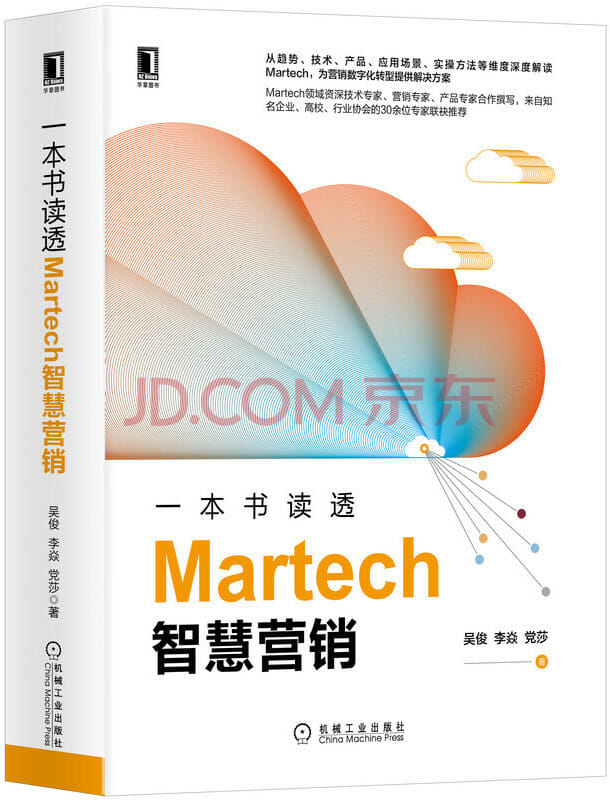

注：【】部分为笔者心得，非原文摘抄。
- Martech 是一种新的市场营销理念，即以消费者为核心，以技术为基础，以信息和数据为载体，通过信息和数据的流动，实现价值传递和增值，从而为消费者带来正收益，最终帮企业实现业绩增长。
- 营销指企业发现或挖掘准消费者需求，从整体氛围营造及自身产品形态营造的角度去推广和销售产品的过程。
- 市场营销是指在创造、沟通、传播和交换产品的过程中，为客户、合作伙伴以及整个社会带来经济价值的活动、过程和体系。
- 反身性原理，即人的心理会对个人和群体未来的行为产生影响，从而改变未来的结果。
- 一切营销活动都需要围绕消费者的体验展开。
- 人性为本，技术为用。
- 增长黑客指一群以数据驱动营销、以市场指导产品，通过技术手段贯彻增长目标的人。
- 增长黑客的目标是用最低的成本、最快的速度获得最大的增长。
- 增长黑客的核心思想：
- 搭建增长团队
- 好的产品是增长的根本
- 确定增长杠杆
- 快节奏试验
- 获客
- 激活
- 留存
- 变现
- 对于增长黑客，一个非常重要的条件就是企业具有自身的数字化 2C 产品平台，可以快速进行制定增长策略、改版、试验、回收数据、多次迭代等操作。
- 传统企业首先需要进行企业的数字化转型，将企业的产品、消费者、触点等都数字化之后，才能进行增长黑客模式的探索。
- 一切以数字说话，而不是根据专家或领导的经验或拍脑袋来决定。
- 理性消费者更具备判断力，偏好真诚的沟通方式，反感过度包装。
- 如果用户停止了增长，我们就必须通过数据创造增长。——互联网女皇 Mary Meeker
- 品牌方需要做的，就是保证客户收益/投入达到最大化。
- 营销的核心是确定在什么场景下对谁讲什么，目的是促进交易转化。
- 数据功能模块包含：
- 精细化业务运营
- 基于数据分析洞察/自动化
- 客户关系管理维护
- 数据的采集/集成
- 基础设施
- 精细化业务运营
- 基于数据的分析洞察和自动化功能主要包含市场和社交洞察、内容评估、营销和效果分析、广告监测和验证、媒体预算管理、数据分析平台、归因及效果分析、人工智能、线索管理、A/B 测试等。
- 客户关系管理维护功能主要包含客户关系管理 CRM、目标客户营销、呼叫中心（分析/管理）、事件和会议管理、忠诚度管理、会话式营销、客户体验等。
- 数据的采集和集成功能模块主要包含爬虫工具、ETL、智能探针、第三方 DMP、数据供应商、数据交易平台、数据交易区块链等。
- 基础设施功能主要包含 DMP、CDP、数据可视化平台、用户细分、数据丰富化、模型、数据合规、数据湖、数据中心、商业智能、云设施、IT 架构等。
- 触点/触达功能模块包含触媒、程序化广告、电商/销售管理。
- 内容功能模块包含个性化引擎、数字资产管理、内容管理平台、知识产权（IP）/文化、内容产出（PGC/UGC/OGC/BGC）/多渠道内容网络（MCN）、内容资源采买、动态创意优化、动态主页、交互式内容、短视频/直播营销、HTML5 等。
- 管理类功能模块包含人才管理、产品管理、项目管理和敏捷精益管理、协作及工作流、RPA、财务及预算管理、供应商评估等。
- 生态辅助功能模块主要包含营销行业内相关的咨询、媒体、教育等技术平台及服务。
- 交易五要素：
- 交易方
- 交易物
- 交易方式
- 交易价格
- 交易数量
- 抢占用户心智，使用户在萌发需求的第一时间就想起广告主的产品及解决方案，由此促进购买转化。
- 广告欺诈/作弊是指通过模仿用户来虚假完成对广告的曝光、点击或其它行为，并向广告主收取相应费用，从而产生虚增收入的一种流量作弊甚至犯罪的行为。
- 因作弊/欺诈产生的广告流量常被称为无效流量，分为常规无效流量和复杂无效流量。
- 常规无效流量的主要类别包括：
- 非浏览器 User-Agent 或其它形式的未知浏览器带来的流量；
- 来自声明的机器人爬虫的流量；
- 超出投放项目维度的参数设定的访问频度、访问时间间隔等的流量；
- 已知的来自 IDC、执行了预加载且没有指定加载后触发时间的流量；
- 媒体方发起的对广告主提供的链接定期进行检测产生的流量；
- 来自已知的高位作弊来源的流量，可依据预设列表判断；
- 带有非法参数及字符的流量，其中非法参数包括通过伪造等非正常手段生成的唯一标识等关键参数；
- 基本信息缺失或信息矛盾的流量，如确实 User-Agent 信息。
- 复杂无效流量的主要类别包括：
- 高度模拟真人访客的机器人和爬虫产生的流量；
- 广告插件、恶意软件产生的流量；
- 被劫持的设备产生的流量；
- 虚拟化设备产生的流量；
- 被劫持的广告代码产生的流量；
- 广告伺服时故意隐藏、叠加、掩盖、自动刷新或使过程模糊的流量；
- 通过作弊代理服务器产生的流量；
- 以金钱补偿为动机通过操纵测量数据产生的流量；
- 通过篡改或重复使用窃取的 Cookie 或设备 ID 信息产生的流量。
- 通过对广告位的位置、大小、内容特性和创意质量等进行调整，再配合定向优化筛选优质流量的手段，可以优化广告可见性。
- 要不断提升客户的体验和满意度，就要不断地通过各个触点与客户沟通和互动，为其推荐与其个性需求最匹配的内容和促销信息。
- 要拉动客户方为电商平台或线下门店、关注新产品并产生消费，就需要不断通过数据分析找到能吸引客户消费的兴趣点，不断细分人群及扩展相似人群，并通过内容管理平台及个性化引擎对不同人群推送个性化的内容。
- 在客户消费行为路径上及其他数字化触点上埋点是用户行为追踪埋点管理系统的主要功能。
- 客户关系管理是一个以客户为中心，以获取客户、留存客户、提升客户价值为目标，以管理和技术为手段的综合解决方案，其核心价值是提升企业销售业绩、降低销售成本。
- 客户生命周期包括：
- 知晓（Awareness）：首次接触，并逐步深入认识品牌、产品和服务；
- 熟悉（Familiarity）：进一步熟悉企业的各种解决方案能带来的价值和体验，甚至有哪些优惠政策；
- 考虑（Consideration）：积极评估和考虑；
- 购买（Purchase）：购买产品或服务，使用体验优良，最终成为忠实粉丝；
- 复购（Repurchase）：持续复购，并不断通过社交关系传播品牌口碑。
- 常见的客户生命周期划分有：
- 快消品类：知晓、熟悉、考虑、购买、忠诚、复购；
- APP 会员类：潜在、新注册、留存、付费、沉睡、流失；
- 电商类：潜在、活跃、沉默、休眠、流失、消亡；
- 内容运营类：潜客、新客、常客、粉丝；
- 电信运营商类：获取、提升、成熟、衰退、离网。
- 客户体验指消费者整个生命周期中与企业品牌触点的所有的互动中获得的感受和体验。
- 所有与企业触点有过互动的人都是用户。
- 客户是同企业已产生交易，享受了企业提供的产品或服务的用户，又称顾客或消费者。
- 潜在客户是指那些在未来可能与企业发生交易转化的用户，简称潜客。
- 用户体验就是用户在与企业品牌的各个触点交互时获得的体验和感受。
- 电邮直销是指企业（最好是在获得用户许可的前提下）通过向目标客户发送邮件，建立同目标用户的沟通渠道，向其直接传达相关信息，用来促进销售的一种营销手段。
- 营销活动最终都是以促进销售增长为目标的。
- 预测分析是通过对营销相关数据进行高级分析来预测用户接下来最可能会做什么。
- 预测分析大体经过如下环节：
- 对事实数据进行采集；
- 清洗数据、统计分析，事后对事实进行描述性分析：已经发生了什么？
- 诊断性分析：为什么会发生这些？
- 预测分析：将要发生什么？
- 预订条件分析：我们做什么能促使它的发生？
- 内容官平台又称内容管理系统，是以“提高使用效率，关注用户体验”为指导思想构建的、企业级的、能快速制作内容、管理内容、优化体验、分析洞察及对外部用户进行信息分发的平台。
- 个性化引擎是一种工具，根据对不同用户的行为数据进行机器学习，在品牌运营的渠道为用户提供个性化的、定制的内容和体验。
- 社交营销（又称社交媒体营销）是品牌在互联网上的社交媒体及口碑社区中进行的营销，社交营销口碑传播的重点是内容。
- 消费者越来越相信普通用户产出的内容，而非品牌制作的内容。
- MCN 本质是一个多渠道内容供给的网络产品形态，其将 PGC 内容联合起来，在资本的有力支持下，保障内容的数量和质量，最终实现商业的稳定变现。
- 内容联合的目标人群是与品牌、产品或服务特征相匹配的人群，目的是得到这些受众的欢迎，从而接触到更多感兴趣的人群。
- KOC 比 KOL 更接地气，但粉丝量不大。KOC 可理解为社群中靠深度口碑、互动来拉动销售的“小 KOL”。
- 舆情监控用于帮助品牌在博客、论坛、新闻网站，以及微博、短视频等社交平台上监控与品牌业务相关的内容和评论，使品牌能够实时响应消费者的需求和关注点，并根据反馈改进产品和服务。
- 常见的衡量 PR 活动是否成功的系列指标有：
- 舆情监控类：关键词排名、品牌关注度、反向引用/链接（品牌内容被外部媒体引用量）；
- 社交媒体/平台洞察：社交媒体/平台覆盖、社交转发、社交平台互动量、媒体曝光量；
- 生意相关的后端数据：网站流量、销售线索量、销售量。
- 企业使用 DAM 来组织、存储和共享企业内部使用的数字内容资产。当多个利益相关者在项目中协同工作时，该平台是进行版本控制和确保内容符合品牌或监管准则的必要工具。
- 营销资源管理可帮助品牌系统化管理内容及附属物的生产制作，与 CRM、DAM 系统紧密结合，有助于市场营销部门的资源分配和工作流程管理。
- TMS 的目标是跟踪用户的在线行为。
- 归因工具用于帮助营销人员分析在品牌与客户互动的每个渠道及接触点中，哪些能助力交易转化，哪些贡献最大。
- 搜索引擎营销是指当用户在搜索引擎中输入一个词或一句话进行查询时，将品牌的内容页在付费或自然搜索结果中的排名提高。
- 对云计算技术、各种 API 和人工智能算法的应用，以及对数据和流量的匹配率、多方数据源的整合、多渠道多形式持续触达用户、持续不断优化投入产出比的重视，都可以提升和优化营销活动的触达效率和效果。这些都是 Martech 升级的关键基础。
- 弄清楚数据的所有权和主要来源是数字化转型的重要前提。
- 数据管理平台是把分散的多方数据整合并纳入统一的技术平台，通过对这些数据进行标准化和细分，让企业可以把得到的结果推向现有的互动营销环境以激活运用的平台。
- 获取新客的成本远高于促进老客复购的成本。
- 匹配率（Match Rate, Mapping Rate）是指两个不同系统之间可以匹配的唯一用户的百分比。
- 在合适的场景触达正确的受众并传递合适的信息是实现营销目标的基础。
- 数据可视化平台可以帮助营销人员将来自不同系统的大量数据输出并汇集在一起，然后分析这些数据的趋势、维度及各因素间的关联关系，再以图形化的方式呈现出来。
- AI 可以利用专门的计算机系统来学习和解释大量的数据，以人类不可能达到的规模和速度做出决策。
- 市场进入存量时期，营销进入高度竞争阶段，只能通过深度精细化的用户运营来增强用户体验，并时刻关注投入产出的效果，促进用户的交易转化，拉动生意增长。
- Adtech 及 Martech 中的优化具体指的是根据结果的反馈，及时甚至实时地改进策略，已获得更好的结果或业务成果。
- 个人识别信息是唯一识别消费者的数据。PII 是确定的（代表一个特定的人），而不是基于概率论推断得到的（可能是那个人）。
- 数据合规：必须在遵守法规的前提下使用数据。
- 【产品的品质和与用户的契合度才是销售长期健康增长的唯一根源。】
- 企业数字化转型成功与否，取决于企业是否采用了战略性的数据管理方法并形成深入的经营洞察。敏捷化营销成功与否，很大程度上取决于其创造和管理数字化产品、服务和体验的能力。
- 数据生命周期：数字/数据化 → 信息化 → 业务化。
- 在数据生命周期的每个重要环节，企业是否能从数据中提取最大价值，是评估其整体数据能力成熟度的关键方向。
- 数据采集能力即企业及时、有效地从所有相关渠道收集所有相关数据点的数据的能力。
- 了解单个数据点的有效来源和数据采集方式是确保总体数据质量的一个必要步骤。同时，也需要关注关键数据点的成本和 ROI，以便选取最经济的来源。
- 雇佣具备数字化能力的新员工和培训现有团队，是实现更高级别数据能力的关键要素。
- 企业营销数字化转型的 4 个主要阶段：
- 数据资产化
- 客户增长
- 客户体验提升
- 生意增长
- 任何技术的应用都是业务驱动的。
- 企业选择的 DMP 应该是开放的，并且容易与 Adtech 供应商和媒体流量供应商集成。
- 在一个封闭的生态系统中，你会被迫为不想要或不需要的产品付费，这从长远来看不会带来好处。
- 营销主对 DSP 供应商的评估重点应放在 DSP 系统的操作和设置的简易性，以及 DSP 在媒体投放优化和竞价引擎方面的软件质量上。
- Martech 时代的品牌和市场人员需要具备一定的数据处理知识和数据敏感度。
- 人群包同流量的匹配率也常被称为找（召）回率，是决定重定向效率的关键指标。
- TMS 是市场营销自动化的重要组成部分。
- 确保数据收集组合的复杂度适中，采集太复杂的数据成本会增加，成功比例和可用量级会减少；采集太简单的数据虽然成本会减少，但也会造成有效性、可信度降低。
- 高匹配率使企业能够触达正确的受众，并实现更高的销售转化。
- 企业组织架构的变革往往是落后于技术变革的，原来割裂的部门架构，以及割裂的系统和数据孤岛，是 Martech 在组织内落地的巨大障碍。
- 改善用户体验通常是企业数字化转型的一个关键驱动因素。
- 所有的 Adtech 供应商都应该有一个允许引入自动化功能的 API。
- Martech 技术平台三分靠建设，七分靠运营。
- Martech 项目组的运营能力主要体现在两个方面：
- 能够结合 Martech 技术平台的能力以及对数据的分析和解读，制定标准化的运营流程和规范，保证企业 Martech 技术的稳定输出；
- 能够根据业务需要设计运营场景，帮助提升数据质量和优化 Martech 的实现，并持续将通过验证的运营流程标准化，持续提升企业 Martech 水平。
- 广告传播的根本目标：在合适的时间、合适的场景、合适的人群中传递合适的广告信息以抢占用户心智，保证用户萌发需求的瞬间，能想起广告主的产品或解决方案并进行购买。
- 典型营销需求包括：
- 新品推广的重点是覆盖人群精准、覆盖面广、有效强度大；
- 品牌提升的重点是与用户持续沟通、大规模个性化；
- 促销转化的重点是用户转化全链路营销、大规模个性化、精准互动等。
- 广告媒体的投放效率具体体现在：
- 增强目标受众覆盖率；
- 降低单人覆盖成本；
- 提升互动率等。
- 广度覆盖，原则上说，目标受众覆盖率越高，在转化率恒定的情况下，后续能转化为消费者的人数就越多。
- 点击率是指广告被点击次数与广告被收看次数的比例。
- CTR 的经验参考数据：移动端 1%左右，PC 端 0.1% - 0.2%，信息流 2% - 3%。
- 到达率是指点击广告后到达落地页网站的次数或打开 APP 次数与广告被点击次数的比例。
- 有效访问数量是对后续销售线索进行有效评分的重要依据。
- 点转率是转化数与点击数的比例，一般经验数据为 0.8%。CMP 是优化该指标的重要工具。
- 从用户留线索数到到店数的转化率一般为 1% - 2%。
- 在应用第三方 DMP 的过程中要注意几点：
- 各个第三方 DMP 由于自身数据源和加工逻辑不同，即使是相同的标签，其背后的含义往往也是不同的；
- 广告主在与第三方 DMP 合作之前还要做数据的准确度测试；
- 如果需要与多家第三方 DMP 合作，需要做多家 DMP 之间的重合度测试和标签互补性、相关性测试。
- 私域数据就是广告主在自有触点采集和留存的用户数据。
- 泛私域数据指的是第三方平台与用户沟通和接触时产生的可以通过商务谈判纳入第一方 DMP 利用范围的数据。
- 公域数据主要包括：
- 从第三方购买数据
- 网络爬虫数据
- 对第一方数据源进行质量评估，主要从以下几个方面进行：
- 数据缺失：重要属性或数据记录值缺失，如实体定义有 100 个字段，实际只有 50 个有值；
- 数据不完整：某类业务数据不完整，如有的客户没有产品购买记录，有的客户没有对应的客户信息；
- 数据不合理：数据不符合业务逻辑，造成这类数据质量问题的主要原因是数据采集程序没有进行合法性校验；
- 数据冗余：指同一数据有多个版本和入口，产生这个问题的主要原因是数据模型设计不合理；
- 数据冲突：同一数据在多个系统中有多个不同的内容，造成这类问题的主要原因是没有一个统一的规划和冲突解决方案。
- DMP 数据采集能力包括但不限于：
- JavaScript 监测代码采集；
- 开放 API 接口采集；
- SFTP 接口采集；
- 离线文件上传接口采集；
- SDK 采集；
- 其它采集方式。
- 通过 JavaScript 监测代码采集媒体数据时需要注意的关键点：
- 并不是所有媒体都允许添加第一方 DMP 监测代码为广告主回传用户数据，往往需要经过商务谈判；
- 垂直类媒体由于自身规模较小，并没有非常强的技术能力，因此一般只支持添加第三方监测的监测代码；
- 如果有多家平台服务方都需要添加 JavaScript 监测代码来采集数据，则多家的监测代码需要采用串码或并码的方式进行处理。一般来说，并码处理方式对广告主来说操作比较简单，各家监测代码彼此独立，由媒体负责页面跳转；如果是串码处理方式，则一般最后串接的监测代码方要负责落地页的跳转；
- 媒体回传 JavaScript 监测代码数据时存在同步和异步两种方式。
- API 接口采集数据的主要优点：
- 全自动系统采集，没有人为参与环节，可靠性高；
- 接口适用的场景非常丰富。
- 数据清洗的任务是过滤掉那些不符合要求的数据，可以直接过滤掉，也可以将过滤的结果在上层展现，由业务部门确认是直接过滤掉还是由数据源修正之后再进行抽取。
- 数据清洗过程中处理的不符合要求的数据主要有：
- 不完整的数据：特征是应该有的信息存在缺失；
- 错误的数据：产生错误数据的原因主要是数据源系统本身的数据质量控制机制不够健全，在数据输入后没有进行判断就直接写入系统；
- 重复的数据：特别是维度表中比较常见，需要将重复的数据记录下来，让客户确认并整理。
- 数据清洗需要注意的是，不要将有用的数据过滤掉了，每个过滤规则要认真进行验证，并在用户确认后才可以执行。
- 数据转换的任务主要是进行不一致数据的转换、数据粒度的转换和业务规则的计算。
- 市场上最常见的数据源的 ID 类型：
- 媒体平台（移动端）：通过 DeviceID 来标识用户（Android 用 IMEI、iOS 用 IDFA）；
- 媒体平台（PC 端）：通过 Cookie 来标识用户；
- 微信（包括公众号和小程序）：通过 Open ID / Union ID 来标识用户；
- 微博：通过 UID 来标识用户；
- 第三方电商：通过电商账号、手机号来标识用户；
- 官网：通过 Cookie 来标识用户；
- 智能电视：通过智能电视自身具备的 MAC 来标识用户；
- WiFi 探针：通过抓取到的 MAC 来标识用户；
- 线下智能设备：通过 FaceID 来标识用户；
- 广告主自由的账号体系：通过手机号、邮箱、卡号、会员号等来标识用户。
- 数据脱敏保护是指对用户的某些敏感信息或私密性信息，通过脱敏规则进行数据的去隐私化或变形，最终实现数据的可靠保护。
- DMP 常见的需要脱敏的数据有：姓名、身份证号码、地址、电话号码、银行账号、密码、交易日期、交易金额、疾病等。
- 常见的数据脱敏算法包括但不限于：
- Hiding 算法：将数据替换成一个常量；
- Hashing 算法：将不定长度的数据映射为定长哈希值；
- Truncation 算法：将数据尾部截断，只保留前半部分；
- Mask 算法：数据长度不变，但只保留部分数据信息；
- Floor 算法：数据或日期取整。
- 标签分为：
- 事实标签：直接把用户的属性和行为的事实情况变为标签，没有进行人为逻辑判断，只是客观反映一个事实情况；
- 权重标签：经过一些逻辑规则判断加工出来的标签。逻辑规则判断有一定的时效性和强弱度，因此，这些标签会带权重，根据有效时段符合规则的次数来确定权重的大小；
- 模型标签：根据机器学习模型加工出来的标签。
- 标签设计过程中的几点原则：
- 标签体系需要不断更新和维护；
- 事实类、权重类标签为主，辅以模型类标签；
- 充分利用 TGI 的概念，利用个体用户在整体分布中所处的位置来确定规则阈值；
- 可以有一定的创新；
- 标签计算口径梳理。
- 标签的口径梳理包括：
- 业务口径梳理：确认标签业务含义，根据业务场景需要确定该标签的更新频率；
- 技术口径梳理：需要考虑计算的准确性，提高计算效率和性能。
- 数据资产管理是规划、控制和提供数据及信息资产的一组业务职能，包括开发、执行和监督有关数据的计划、政策、方案、项目、流程、方法和程序，从而控制、保护、交付和提高数据资产的价值。
- 一般认为数据资产管理有 10 种职能：
- 数据治理
- 数据架构管理
- 数据开发
- 数据操作管理
- 数据安全管理
- 参考数据和主数据管理
- 数据仓库和商务智能管理
- 文档和内容管理
- 元数据管理
- 数据质量管理
- 用户分群分为：
- 简单规则分群：业务人员根据自己对业务的理解，选取某些用户特征，并结合一定的规则，对用户进行分群；
- 模型分群：利用机器学习和数据挖掘技术，通过模型算法，将用户分为不同的群组。
- 简单规则分群包括：
- 通过用户行为分群
- 通过用户标签分群
- 通过用户统计指标分群
- 模型分群和简单规则分群的区别主要体现在：
- 模型分群由于是利用模型算法针对不同用户在各种特征维度上进行比较，因此可以同时比较大量的特征维度，通常考虑的因素会比业务人员更多；
- 模型分群不会带入业务人员的主观业务经验，有时可以发现原来没有发现的影响业务的因素，从而带来营销上的创新。
- 常用的模型分群方式包括：
- 利用聚类算法（无监督学习）分群；
- 利用分类算法*监督学习）进行分群。
- 无监督学习一般可以用来解决描述性问题，监督学习一般用来解决预测性问题。
- 常用的聚类算法包括：
- K-Means（K 均值）
- K-Medoids（K 中心点）
- 均值漂移
- 基于密度的聚类（DBSCAN）
- 用高斯混合模型（GMM）的最大期望（EM）聚类
- 凝聚层次聚类
- 图团体检测（Graph Community Detection）
- 常用的分类算法包括：
- 朴素贝叶斯
- 决策树
- 神经网络
- KNN
- 支持向量机
- 逻辑回归
- 线性回归
- 随机森林
- 梯度提升树
- 企业数字化转型的第一步是对企业的用户进行全面洞察。
- 用户画像的目标是解决业务问题，因此需要针对性地选择用户标签进行统计展现，提供对业务有价值的洞察，而不是对所有标签都进行统计展现。
- Look-alike 是指寻找相似性。广告主提交一些列客群范围，在该范围内的客户群体称为种子客群，它是机器学习的正样本。负样本会从非种子客群或平台过去积累的一些人群中进行选取。训练模型之后，利用模型结构对活跃客群进行打分，最后得到广告主需要的目标人群。
- Look-alike 在应用上有三大关键点：
- 学习的数据维度
- 行为结果数据：已经采取了具体行动取得的数据；
- 行为一项数据：倾向于采取某种行为的人群数据；
- 行为偏好数据；
- 行为模式数据；
- Look-alike 算法工程化
- 根据效果数据优化 Look-alike 算法
- 学习的数据维度
- 一般来说，通过行为意向数据来寻找人群，转化率会比较高。但同时，客户可能已经被别的竞品在更早的环节进行了影响，转化成本也会相应提高。
- 行为偏好数据会保证广告主在潜在客户群覆盖规模和精准度之间达到一个很好的平衡，是广告主普遍选用的一种数据。
- 行为模式是指通过分析用户的行为与时间、空间的关系，以及一系列行为之间的时间和空间序列的关系，总结出的具有一定一致性意义的行为表现，通过这些一致性表现预测相关行为。
- Look-alike 算法工程化实力体现在以下方面：
- 算法的学习维度是否可以调节；
- 是否可以根据相似度选取最终人群的规模；
- 学习结果是否可设定过滤条件；
- 一些工程化指标，如数据质量、样本数据维度完整度等。
- 常见的归因模型有：
- 首次互动归因模型
- 线索转化互动归因模型
- 末次互动（机会建立互动）归因模型
- 末次非直接点击归因模型
- 末次（某营销渠道）互动归因模型
- 线性归因模型
- 时间衰减归因模型
- U 型归因模型 / 基于位置的归因模型
- W 型归因模型
- 全路径（Z 型）归因模型
- 自定义算法归因模型
- 媒体价值的分析除了看每次投放活动中具体能带来多少转化意外，还有很多评估维度：
- 媒体带来的新流量的绝对量级及其占比是否比较高；
- 媒体中高价值客群或者品牌关注的未来核心客群的占比是否比较高；
- 某媒体与其它媒体的流量重合度是否过高；
- 媒体流量的 ROI 是否高
- CDP 是一个营销系统平台，将企业不同渠道、不同营销场景中的各类客户数据进行统一采集、整合、分析、应用，以实现客户建模、设计营销活动、提升营销效果和优化客户体验的目标，从而促进企业业绩及利润的增长。—— Gartner
- CDP 包含三部分能力：
- 整合：归一整合所有客户数据，形成完整的客户画像，目的是细分市场和受众群体；
- 行动：根据企业的营销情况，提供相应的营销活动或决策建议；
- 洞察：提供全面、多元、实时的数据分析报表，以掌握营销效果。
- CDP 出现的痛点主要集中在以下三个方面:
- 营销渠道的多样化
- 市场营销对效果提出更高的要求
- 不断提升的客户体验
- CDP 具有以下特点：
- 数据连接
- 数据整合
- 数据服务
- 数据安全
- 私有云部署
- CDP 涉及到用户包含与品牌有过互动的所有人群。
- CDP 建设在企业内部的目的是沉淀用户数据资产。
- CDP 的数据内容通常包含以下类别：
- 统一 ID
- PII
- 其它 ID
- 客户属性数据
- 客户行为信息
- 客户标签信息
- CDP 的建设侧重于发挥私域数据价值，同时重视私域客户及私域流量精细化运营。
- CDP 基本能力包括：
- 数据整合
- 赋能营销活动
- 赋能决策
- 当数据环境发生变化时，市场营销人员能否敏捷地响应变化，是衡量 CDP 好坏的重要因素之一。
- ID Mapping 是将不同渠道上出现的 ID 进行匹配，同时为每个被识别出客户建立一个统一的 ID，形成在 CDP 中唯一标识客户且全局唯一的客户 ID。
- CDP 需要为营销及洞察研究的场景提供数据应用的支撑。
- 客户细分是对具有共同特性的客户进行详细分组，构建出粒度较小的客群。
- 构建客户细分的方法有两种：
- 通过标签构建
- 通过规则构建
- CDP 业务应用分两个大方向：
- 营销生态的应用：主要着重于私域客户及私域流量精细化运营，使自有媒体及社交媒体方向的营销场景更加高效、智能；
- 决策洞察的应用：包括单体客户 360° 视图、客户旅程的迁移预测、客户群体特征洞察、客户价值评估、客户风险预测、客户感知评估、渠道归因洞察等。
- 典型的 CDP 数据能力开放场景有：
- 将细分的客户人群输出给营销自动化技术栈；
- 将统一客户视图中的客户行为数据输出给数据科学家，对人群的原始数据进行建模以完成深度挖掘，找到客户行为的共性或者特征；
- CDP 决策洞察分析对外部系统的嵌入式支持。
- 营销自动化通过数据驱动市场营销活动自动执行并完成营销任务，以代替人工完成重复性工作。
- 营销自动化的目标时自动化运行日常营销活动，在执行日常营销活动的过程中收集数据信息，同时以数据驱动营销活动的执行及优化。
- CDP 的目标是提升洞察力，通过数据洞察力来指导并优化营销活动策略。
- 营销云的通用能力一般包含以下几大类：
- 数据管理平台：负责提供连接、集成能力，并提供营销活动数据支持能力；
- 多渠道管理：负责多渠道的技术对接，以及营销活动渠道策略的构建、执行、分析洞察、优化；
- 营销活动管理：支持对灵活多样的营销活动进行管理，包括营销策略的制定、投放和优化等；
- 内容管理：负责管理灵活多样的内容数字资产，包括以可视化的方式构建营销创意内容、内容营销团队协同、内容资产发布及共享、内容营销效果洞察及评估等。
- CDP 可以作为营销云数据管理平台的一部分为营销云提供技术及数据支撑，以获得更为智能的营销策略。
- 从业务定位来看，DMP 更倾向于解决获客问题，而 CDP 更聚焦于管理潜在客户、转化客户、会员、价值客户的运营、再营销、价值提升等问题，更偏向于为企业营销自动化、销售自动化、服务自动化提供人群数据。
- CDP 主要以转化客户和潜在客户为中心进行数据采集、洞察分析及支撑市场营销活动，主要面向市场营销人员。
- CDP 数据完整性通过三个角度来衡量：
- 是否有客户单体级别颗粒度数据；
- 是否有匿名客户或者已识别客户的单体数据；
- 数据是否高度可信。
- 市场营销人员的掌控力通过两个角度来衡量：
- 客户数据采集、客户细分、客户激活的可用性及灵活性的高低；
- 是否需要 IT 资源或者开发资源参与。
- 数据可用性通过两个角度来衡量：
- 是否支持对内外部数据进行集成的能力；
- 是否具备针对已识别客户和未识别客户进行数据集成的能力。
- 阿里巴巴的 Uni Marketing 是指在新零售体系下，以消费者运营为核心，以数据为能源，实现全链路、全媒体、全数据、全渠道营销的方法论。
- 全域营销的策略有两个关键点：
- 不重不漏；
- 在适合的渠道与适合的目标客群建立互动联系，即实现精准互动。
- 阿里巴巴全域营销的数据分为三个部分：
- Uni ID：打通阿里系服务平台账号间的关系，做到可辨识、可分析、可触达受众；
- 品牌私有数据银行：某品牌与它的受众相关的全链路数据都被记录在数据银行中，非该品牌的系统用户没有权限查看数据银行的数据，做到可存储、可洞察、再应用；
- 广告数据：可以追踪广告投放后受众与品牌间全部触点的链路数据。
- 每一次营销战役都是众多资源与任务的组合，每一次用户裂变都是创意与机制的交互。
- 私域流量池的优势有：
- 运营私域流量几乎是免费的，即使有成本也非常低；
- 长尾价值很高；
- 可以拥有自己的用户体系；
- 能够进行多波次运营；
- 可以建立自己的品牌和用户忠诚度；
- 可建立品牌与客户的交互渠道，且不需要依靠第三方媒体或者代理；
- 可以用于产品、服务的延伸和多元化营销；
- 可以用 80%的精力来为产生 80%收入的那 20%客户提供服务，且效率更高。
- 经典的漏斗模型是 AARRR 模型：
- Acquisition：获取
- Activation：激活
- Retention：留存
- Revenue：变现
- Refer：自传播
- 私域流量运营多使用 RARRA 模型：
- Retention：留存
- Activation：激活
- Referral：推荐
- Revenue：变现
- Acquisition：获客
- 客户旅程（Customer Journey）是指客户对企业的完整体验。在客户生命周期的每个阶段（从意识到忠诚度），它包括所有渠道和所有与客户的交互。
- 客户旅程分析是跟踪和分析客户可用渠道组合与组织交互方式的过程。—— Gartner
- 客户旅程分析的目标是对客户旅程（客户与企业在所有渠道的所有交互和动机）进行分析和预测，从而优化企业与客户的互动方式，以便持续为客户提供优质的服务，让客户得到更好的体验，同时为企业带来更多的转化和收入。
- 基于 CDP 的客户旅程分析在体验上可以做到三个层次的提升：
- 基于客户关键接触点的优化；
- 全渠道全流程客户体验的优化；
- 客户价值驱动的客户体验重塑。
- CDP 以客户为中心整合全渠道的交互数据，形成中心化、统一、持久的客户数据统一视图。
- 客户体验管理是战略性地管理客户对产品或公司全面体验的过程。——《客户体验管理》，Bernd H Schmitt，哥伦比亚商学院教授
- 客户体验管理以提高客户整体体验为目标，注重与客户的每一次交互，协同售前、售中、售后的各个环节与客户的各个触点，有目的且无缝地为客户传递正面信息，创造匹配品牌的正面利好感知，从而实现客户与品牌的良性互动，增加企业的收入和资产价值。
- 在构建客户体验管理时，需要从两方面进行：
- 客观交互经历感知，通常反映的是客户可观的体验结果；
- 主观心理层面感知，通常反映的是客户主观的体验感受。
- 数据和算法是个性化推荐的两个重点。
- 个性化推荐常见的算法有：
- 基于内容推荐
- 基于用户的协同过滤推荐
- 基于物品的协同过滤推荐
- 基于标签的推荐
- 隐语义模型推荐
- 社会化推荐
- 根据时间上下文推荐
- 基于地理位置推荐
- CDP 项目实施过程中会遇到一些需要规避的数据问题：
- 技术问题导致构建的统一客户视图不完整；
- 数据时效性导致数据不一致；
- 数据推送效率；
- 保障数据能力开放过程中的数据安全。
- 构建 CDP 客户统一视图需要用到 NoSQL 数据库、时序数据库、图数据库等非传统数据技术，以此来消除许多技术障碍。
- 需要数据服务来规避数据时效性和可用性问题。
- 在 CDP 项目建设初期，要明确数据保存的期限或者事件触发的时间窗。另外，也要在执行营销策划前用沙盘演练来预测营销策划的发送时间。
- 在 CDP 构建数据共享服务时，需要在数据安全层面考虑一下三个问题：
- 对数据进行分级分类，明确 CDP 数据资产分布及使用情况，并制定相应的安全策略；
- 基于数据使用角色和场景选定安全技术。
- 数据隐私保护技术有：
- 数据加密
- 数据脱敏
- 联邦学习
- 通过安全元数据的等级管理来进行数据访问权限控制，不同的系统用户对应不同的数据访问等级。
- 企业有以下需求的时候，就需要考虑投资建 CDP 平台了：
- 希望统一整合触点的客户数据
- 希望对客户进行深入研究及细分
- 希望对不同细分人群提供个性化营销方案
- 希望提升全渠道营销效率
- 希望提升客户价值或者进行二次营销
- 在 CDP 建设的定位上需要明确以下几个标准：
- 全渠道数据采集：必须能够从与客户业务交互的所有渠道和触点上采集数据；
- 高质量的数据集成：负责采集客户数据，并通过数据集成等能力与现有洞察工具无缝集成（无需代码）；
- 统一的客户视图：准确地在客户数据中记录每个客户在每个渠道中的 ID，这样才能做到为不同前端触点提供客户单体视图，同时也可以在营销活动中在不同前端触点上触达用户；
- 可以进行客户细分：根据采集集成的客户属性数据来自定义创建受众群体，同时能够使用这些自定义的受众人群在第三方付费广告媒体、营销自动化工具或者前端触点上触达客户；
- 数据管理能力：具备元数据管理、血缘分析、数据回退等可视化数据管理能力，且能够有效治理数据，保证数据质量；
- 数据可靠性及可扩展性：保证数据的可靠性、可用性、准确性和可扩展性；
- 数据安全和客户隐私保护：确保客户隐私数据没有泄露的风险；
- 原始数据访问：在数据安全策略允许的情况下访问原始数据，且可以做到通过原始数据进行客户研究，并回答营销策略相关的问题；
- 跨团队跨职能提供数据服务：不仅要为市场营销人员，同时要为产品设计、运营、洞察分析等团队提供用于客户研究的数据。
- 内容营销是一种战略性的营销方式，它主要通过创作和分享有价值、相关性强和持续连贯的内容来吸引并留住明确的目标受众，最终驱动消费者产生购买等行为，为企业带来商业收益。
- 品牌持续提供有价值的信息，使消费者提升对品牌的忠诚度，进而转化成购买行为，实现企业的利润增长。
- 在客户运营层面，内容营销的效果体现在以下几个方面：
- 产品理念长期教育；
- 让客户有参与感，让客户成为产品和品牌的主人；
- 传播裂变。
- 内容营销追求通过理性的、长期的产品教育与客户达成共鸣。
- 内容营销包括以下特性：
- 内容营销适用于所有的媒介渠道和平台；
- 内容营销要为用户提供一种有价值的服务，能吸引用户、打动用户、通过解决方案帮客户解决实际问题、影响用户和品牌或产品间的正面关系、培养用户信任；
- 内容营销要有可衡量的成果，最终能带来盈利。
- 内容营销的重要趋势有三个：
- 基于视觉的内容营销；
- KOL 营销和社区建设；
- 内容互动和游戏化。
- 内容策略就是围绕客户、内容、场景、产品的互动策略。
- 通用内容策略特征：
- 热点性
- 时效性
- 即时性
- 持续性
- 方案性
- 实战性
- 促销性
- 在内容不断垂直细分的背景下，通用内容已经丧失了吸引力，建立更细颗粒的内容来捕获细分客户群体是发展趋势：
- 消费者喜欢有指导性和有帮助价值的内容；
- 个性化内容更能促进消费者购买；
- 消费者希望持续获得内容；
- UGC 内容让消费者更有亲近感；
- 内容传播渠道碎片化使消费者更关注内容本身而忽略了品牌。
- 基于数据制定有效的内容策略和传播策略是内容营销成功的关键。
- 以数据为基础的内容策略及传播策略需要做到围绕客户生命周期和客户进行持续沟通与互动、针对细分客户提供可以吸引客户的个性化内容、用场景化内容吸引客户注意。
- YouTube 的 3H 内容方法：
- Hero（英雄型内容）：建立展示品牌精神、扩大知名度和影响力的传播型内容；
- Hub（聚拢型内容）：聚焦核心受众情感和爱好，引导客户访问网站的导流型内容；
- Hygiene（日常性内容）：满足消费者日常利益需求的日常型内容。
- 定期观测内容指标的平均值对内容营销非常有帮助。
- 创建有效的内容营销策略要围绕 Why-Who-What-How-How Much 进行策划：
- Why：内容营销的目的和目标是什么？为什么要创建内容营销策略以及希望内容营销策略产生什么价值？
- Who：谁是内容策略的受众？
- What：构建的内容策略具体是什么？独特性在哪里？什么可以给受众客户带来有价值的启发？
- How：如何构建和管理内容营销策略？在什么时候启动？在什么特定场景触发内容策略？
- How Much：如何衡量内容营销的绩效？如何评估内容营销对业务影响的结果，并找出改进方法？
- 内容营销策划步骤：
- 制定内容营销策略；
- 确定内容营销目标；
- 研究受众特征；
- 团队协作流程。
- 内容营销策略是将品牌或产品与受众客户联系起来，逐步接近内容营销目标的手段。
- 当涉及多个团队、参与角色、负责人时，可视化工作流程、审批流程就成为内容营销策略的质量保证。
- 为客户提供有意义的内容体验是内容营销的重点。
- 定义内容策略及传播策略要注意以下几点：
- 内容一定要足够吸引目标客户的注意；
- 有效校验内容质量，避免错误；
- 内容策略及传播策略要平衡营销效率及营销效果。
- 内容营销策略一定是为辅助整体营销目标而制定的，需要衡量内容是否可以驱动客户采取进一步行动或者进一步建立客户互动关系。
- 以客户运营为目标的内容营销，要以品牌长期教育、C2B 参与感和传播裂变为目标。
- 内容管理平台需要具备以下几个关键能力：
- 跨触点和跨设备的内容管理；
- 为不同客户提供个性化内容；
- 借助平台为数字化内容创作提供素材及灵感；
- 内容策略分发能力和内容策略效果追踪及评估能力。
- 内容营销注重写和发，高质量的内容决定着传播的效果，发布的平台决定了传播的速度。
- 基于内容策略和传播策略我们可以将 CMP 的核心能力拆解为内容创建及优化、内容管理、内容营销自动化、内容分发、效果跟踪及分析等几个方面。
- AI 技术在内容生产方向的应用有：
- 预判内容的爆点，指导作者写出让用户更感兴趣的文章；
- Topic 生成，针对不同受众特点生成不同 Topic；
- 机器人撰稿，通过预设的撰稿结构使用机器人进行撰稿，提升撰稿效率；
- AI 视频剪辑，利用媒体库的沉淀，对给定的视频主题进行文本分析、素材匹配、在线剪辑、云端视频渲染，最终生成视频短片。
- 动态内容是帮助品牌市场营销人员提高广告制作效率及营销效果转化的工具。动态内容通过内容标签还可以应用于个性化推荐。
- 内容营销自动化构建：
- 时机：内容分发的时间；
- 受众：谁应该接到相关内容；
- 发送者：可能有来自多人的内容，确保在计划中列明；
- 关键信息：想要沟通的要点；
- 期望结果：想要激发的行动；
- 渠道：内容如何分发；
- 内容类型：分发什么格式的内容；
- 频次：是否定期重复。
- 传播策略应遵循以下基本原则：
- 找到适合内容营销的传播渠道；
- 建立主题内容传播策略；
- 扩大内容传播策略的既有成果。
- 内容传播策略就是在选定受众后，通过合适的渠道为受众提供合适的、个性化的内容。
- 内容传播策略最终是要在各种渠道触点上有效地触达用户，以保持品牌竞争力并扩大品牌影响力。
- 内容多渠道分发是提高内容营销效率的重点之一。
- 内容分发主要达到三个目的：
- 高效连接人与内容，让客户快速响应内容；
- 针对不同渠道及触点分发不同形式的内容；
- 针对不同地域分发不同的内容。
- 使用归因工具获得可衡量的结果以证明投资回报率至关重要。
- 内容营销使用数据进行效果跟踪和评测的原因有以下三点：
- 可以帮助发现内容营销的所有投入是否真正驱动了销售增长；
- 赋予相关人员做出下一步营销决策的洞察力；
- 分析得到的文档和报告可以在未来使用。
- 全方面考量内容营销策略在营销生命周期中的效果：
- 品牌认知度；
- 受众参与度：可以分析得出哪些内容影响力较高、哪些内容形式更奏效；
- 线索生成数：可以分析哪些内容策略是可以提供给销售漏斗的销售线索；
- 客户转化：需要考虑获客成本、线索转化率等；
- 客户忠诚度：衡量内容在客户资产方面的沉淀能力。
- 客户转化是真正产生收入的环节。
- 某酒店品牌内容策略＋渠道整合营销示例：
- 曝光：吸引关注
- 视频平台：长视频以品牌宣传为主、短视频如网红酒店打卡地；
- 小红书：以创意趣味内容为主，增加曝光和口碑；
- 新闻平台：以口碑和活动宣传为主，结合平台和关键词获得曝光和口碑；
- 曝光：深度认知
- 知乎：围绕酒店、美食、购物，优化知乎问答排名，同时产出新的问答；
- 马蜂窝：以美食、购物为重点，植入酒店品牌和活动信息，打造精品游记；
- 搜索：口碑优化
- 百度：问答、经验、地图等多种内容信息，改善口碑和优化用户体验；
- 微信：以品牌词为主，多渠道发力，抢占微信搜索结果页面。
- 曝光：吸引关注
- 某美妆品牌内容策略＋传播策略场景示例
- 人群划分
- 学生群体受众（16-24 岁）：消费能力不高、希望得到美妆知识；
- 心灵鸡汤受众（25-35 岁）：注重自我管理、关注两性关系；
- 追剧熬夜党：经常追剧、关注明星八卦；
- 关注诉求
- 追求性价比
- 提升自我
- 热播剧 / 当红演员
- 传播策略
- 性价比相关 > 产品介绍 > 购买链接
- 生活方式 > 成分分析 > 用户反馈 > 购买链接
- 热门节目 > 护肤话题 > 产品介绍 > 电商评论
- 人群划分
- 用户流量就是用户的注意力。
- 营销过程就是不断抓住用户注意力，通过影响用户心智来推动用户接受企业提供的产品或解决方案，为用户创造价值并获取收益的过程。
- 一切商业营销的本质都是不断地从各种线上线下的渠道引入外部流量，建立私域流量池，然后不断清洗流量，最终为企业创造价值。
- 无论以何种模式获得用户流量，活跃用户量和平均用户停留时长都是十分重要的指标。因为活跃用户量及平均用户停留时长意味着能产生多大量级的用户接触点，或者说会产生多少用户注意力流量。
- 大数据智能营销要想最大化用好流量及相关数据，就必须了解 SSP 和 ADX 流量供给侧和交易平台，包括其提供相关数据的能力、交易模式的特点等。
- 混合域流量营销平台主要营销作业流程：
- 营销主根据生意目标及平台流量数据情况制定营销计划，合理安排预算及营销策略；
- 根据该混合域流量特点，并结合产品及解决方案的特点，明晰用户画像；
- 有针对性地设计与用户沟通及互动的内容；
- 选择在流量池内投放的广告内容，以及通过各种流量接口或渠道从外部公域或联盟域导入流量；
- 不断地针对具有不同兴趣爱好、不同特点，以及处在不同转化周期阶段的用户进行深度运营及服务，进而提升用户体验，提高用户黏性，提升转化率，达成业绩方面的目标；
- 对通过各种渠道及形式引入的用户流量进行归因分析，评估不同渠道的质量、性价比、规模，以不断调整各渠道策略；
- 为已转化或黏性较高的用户持续提供服务，增加复购率，提高用户忠诚度，使其成为自然流量；
- 同时根据上述这些活动中产生的各种数据进行分析，调整产品、服务与目标用户人群需求的匹配度，不断升级产品及解决方案，并推动更新的营销活动计划的产出。
- 混合域营销平台的主要功能模块：
- 账号管理：多级账号、角色权限等；
- 订单管理：订单、预算、计划、排期等；
- 营销策略管理：资源点位、频次、人群包、各种细分定向、KPI 等；
- 内容管理：直销推送、客服、创意、微站、会员订阅等；
- 流量接入管理：RTB、PDB、PD、API、联盟、私域等资源；
- 数据分析及洞察：对流量、投放、内容、消耗、频次、人群包等进行的分析；
- 用户画像；
- 归因分析；
- 品类分析：不同品类售卖策略、内容、ROI 等；
- 用户转化生命周期管理；
- 系统账号权限管理；
- 私域流量的售卖资源管理：资源位、售卖规则、资质审核、创意审核等；
- 接入模式管理；
- 流量智能分发策略管理；
- 数据分析：资源、账务、行业等分析。
- 精通流量交易的各种玩法、各方诉求、上下游主要角色及关键功能，可更好地提高流量利用率及商业化变现的效率。这也是整个互联网产业仍在不断高速升级的关键所在。
- 传统排期广告常见的售卖模式有：
- 固定广告位置常按时包段售卖；
- 视频及信息流广告常按量售卖。
- 组建流量联盟常见的商业模式及动因有：
- 低买高卖吃差价
- 自有业务延伸
- 降低流量成本
- 电商平台聚合大量入驻商家获取流量的需求
- 程序化广告最重要的标志是通过技术手段管理广告展示的每次曝光机会。
- 营销数字化以程序化、数据化、智能化、闭环持续优化的方式，逐步取代传统人工低效的媒介营销方式。
- SSP 系统主要服务于流量卖方，用于接入流量，其主要功能有：
- 流量卖方接入 ADX 的管理功能
- 预定量 Deal 管理功能
- 报表 / 报告功能
- 财务功能
- 系统账号权限管理
- ADX 系统中服务于 DSP 的功能模块主要划分为以下几类：
- DSP 基础设置管理功能模块
- 预订 Deal 功能模块
- DSP 流量过滤管理功能模块
- 广告主/创意资质审核管理功能模块
- 流量分析报表/报告功能模块
- 财务功能模块
- 透明化是标准化的重要基石。
- 常见的价格保护政策有：
- 不同行业采用不同的价格政策及禁投政策；
- 不同城市层级采用不同的价格政策；
- 不同终端流量采用不同的价格政策；
- 不同广告形式采用不同的价格政策。
- OpenRTB 协议标准中已约定的广告请求携带相关数据段：
- Banner：尺寸、位置、Mimes（该广告支持的多媒体类型）等；
- Video：Mimes、时长、尺寸、位置等；
- Native：Mimes、尺寸、位置等；
- Site：名、域名、类（网站所属类别）、大类（网站所属大类）、页面类（广告所在页所属类别）、URL（该页面的 URL）、来源（从哪个页面跳转到该页面）、搜索词、是否为移动 Web、关键词等；
- APP：名、AppID、域名、StoreURL（该 APP 在 App Store 中的地址）、类（APP 所属类别）、大类（APP 所属大类）、页面类（广告所在页所属类别）、是否收费 APP、关键词等；
- Geo（位置信息）：经纬度（常见于移动端）、国、市、区等；
- User：出生年、性别、关键词、浏览器等；
- Device：IP、设备类型（PC、手机、平板等）、设备 ID（IMEI、IDFA、MAC 等）、型号、操作系统、操作系统版本、硬件版本、设备屏幕尺寸、设备分辨率、系统语言、设备上网运营商、设备上网方式（WiFi、3G、4G 等）等。
- 基于数据指导智能营销的前提是要有人群数据库及已打过标签的人群数据库，即 DMP/CDP；割裂的 DMP 数据，因为脱离了媒介投放执行环节，故无法持续优化及提高绩效；用户 ID 在不同流量中的召回率及打通率决定了数据是否能发挥价值。
- 数字化营销在营销策略执行上的核心原则：不要重复影响一个受众，也不要漏掉一个本来该影响到的受众。
- 苹果 iOS 设备标识
- IMEI：手机序列号，用于移动电话网络识别每一部独立的移动通信设备，共 15-17 位数字，iOS 5.0 之后被禁止调用；
- UDID：有 40 位十六进制数组成，iOS 5.0 之后被禁止调用，视图访问 UID 的程序将不再被审核通过，替代方案是使用 IDFV 或 IDFA；
- UUID：基于 iOS 设备商单个应用程序，如果用户删除再重装程序，UUID 会发生改变；
- OpenUDID：非苹果官方提供并且不受苹果控制，是广大开发者寻找的一种替代方案，如果用户完全删除全部带有 OpenUDID SDK 包的 APP，那么 OpenUDID 会重新生成，而且与之前的值不同；
- MAC：网卡的硬件标识，唯一标识网络设备；
- IDFA：iOS 独有的广告标识符，用于检测广告效果，同时保证用户设备不被 APP 追踪；
- IDFV：iOS 6 中新增，用于应用开发商标识用户，同一个设备的同一个应用开发商的多个应用共享同一个 IDFV，该开发上的所有 APP 被卸载后，IDFV 会被重置，再重装该开发上的 APP 时，IDFV 的值与之前不同，适合用于分析用户在应用内的行为。
- Android 设备标识
- IMEI；
- MAC：Android 6.0 之后被禁止，若有应用尝试获取则会被判定为有害应用；
- ANDROID_ID：Android 特有的 ID，是一组在设备首次启动时系统随机生成的 64 位十六进制数字，恢复出厂设置时会重置；
- ADID：功能与 iOS 的 IDFA 相同，允许用户禁用和重置，由用户决定是否被追踪，通过 Google Service 可以获取 ADID。
- Web 标识
- Cookie：浏览器与服务器保持活动状态同步的信息，是为了辨别用户身份、进行 Session 跟踪而存储在用户本地终端上的数据，通常经过加密处理。
- 用户标识
- 邮箱地址：客户注册、登录、咨询、开发票等操作可获取邮箱地址；
- 电话号码：客户注册、登录等操作可获取电话号码；
- 微信 OpenID：在微信体系中，客户授权或微信支付可获取 OpenID，只要活得 OpenID 就可以获得用户的一些信息，如所在城市、省份、国家以及性别等；
- 微信 UnionID：同一客户在同一个微信开放平台下的不同应用上 UnionID 是相同的；
- 客户支付宝账号：通过用户支付宝进行支付，企业可以得到客户支付宝账号；
- 买家的支付宝唯一用户号：2088 开头的 16 位纯数字，可以通过支付宝进行支付，企业可得到买家的支付宝唯一用户号。
- ID Mapping 的主要目的是把客户不同渠道上的标识拉通以此来识别同一客户，消除数据孤岛，提供客户的完整信息视图。
- ID Mapping 的方法有三种:
- 基于统计学
- 借助第三方数据能力
- 模糊 ID Mapping
- ID Mapping 的 6 个注意事项：
- 区分不同的打通层次；
- ID 之间是多对多的关系；
- ID 持久化有一定期限；
- CookieID 的打通；
- 微信 OpenID、UnionID 的打通；
- 微博 UID 的打通。
- 设备关联打通一般有 2 种解决方案：
- 通过账户体系可以将同一用户的不同设备进行打通；
- 模糊打通的解决方案。
- Cookie 打通率主要限制包括：
- 不同浏览器对 Cookie 的处理不一致；
- 用户如果禁止 Cookie，则 Cookie 不能建立。在客户端，一个浏览器能创建的 Cookie 数量最多为 300 个，并且每个不能超过 4KB，每个 Web 站点能设置的 Cookie 总数不能超过 20 个；
- Cookie 具有不可跨域名性。
- 机器学习本质上是一种数据分析技术。
- 机器学习这门学科所关注的问题是程序如何随着经验积累自动提高性能。
- 机器学习是一种手段或者方式，数据挖掘是一种过程或者目的。
- 监督学习（Supervised Learning）就是知道结果是什么样的，学习过程不会超出某几种范围。
- 监督学习通过学习不同特征的训练数据将数据划分为不同类别或者产生不同的具有规律性的结果，进而实现对新的特征数据进行分类或者预测不同的结果。
- 监督学习可以用来解决分类问题或者回归问题（即预测问题）。
- 监督学习算法包括：
- 决策树分类法（Decision Tree）
- 朴素贝叶斯分类法（Native Bayesian Classifier）
- 基于支持向量机（SVM）的分类器
- 神经网络法（Neural Network）
- k-最近邻法（k-nearest neighbor, kNN）
- 非监督学习(Unsupervised Learning)是指结果并不可预知，需要计算机自己发现数据中的规律，把相似的数据归属或关联在一起，从而解决响应的问题。
- 非监督学习可以用来解决关联问题或聚类问题。
- 常用的关联挖掘算法包括：
- Apriori
- FP-Growth
- Eclat
- 常用的聚类挖掘算法包括：
- K-Means
- 划分法
- K-MEDOIDS
- CLARANS
- 层次法
- BIRCH
- CURE
- CHAMELEON
- 基于密度
- DBSCAN
- OPTICS
- DENCLUE
- 基于网格
- STING
- CLIQUE
- WAVE-CLUSTER
- 半监督学习（Semi-supervised Learning）即首先对未识别数据进行建模，在此基础上再对有标识的数据进行分类或预测。
- 半监督学习主要用来解决分类和回归（预测）问题。
- 常用的半监督学习算法包括：
- 图论推理算法（Graph Inference）
- 拉普拉斯支持向量机
- 强化学习（Reinforcement Learning）采用的是边获得样例边学习的方式，在获得样例之后再更新自己的模型，利用当前的模型来指导下一步的行动，在下一步行动获得反馈后再更新模型，如此不断迭代，直到模型收敛。
- 强化学习常见的应用场景包括动态系统及机器人控制。
- 强化学习常见算法包括：
- Q-Learning
- 时间差学习（Temporal Difference Learning）
- 在创建产品的早期，定义客户是第一要义，需要明确的是产品定位：目标客户是谁？他们的痛点是什么？他们有什么需求？我的产品怎么解决他们的需求？
- 标签通常由标签及标签值构成，标签值从组织形式上可以分为单值标签、单权值标签、多值标签、多权值标签。
- 一般标签值的类型有：枚举型、连续型、区间分桶型。
- 标签根据时效性可分为：
- 静态标签
- 动态标签
- 动态标签的调度方式可以分为：
- 计算周期：可分为日、周、月等；
- 单次计算：通常是一次性调度任务；
- 实时：通过实时数据给用户打实时标签，常用于实时营销活动。
- 标签数据根据计算方式可分为：
- 事实标签：既定事实，从原始数据中提取；
- 模型标签：需要通过定义规则或建立模型来计算得出标签数据；
- 预测标签：参考已有事实数据来预测用户的行为或偏好；
- 衍生标签：基于事实标签、模型标签、预测标签，根据营销活动或主题目标用规则定义并存储。
- 标签数据结构存储分为：
- 结构化存储
- 图形存储
- 用户研究领域常用的算法主要分为六大类：
- 分类方法
- 聚类方法
- 时间序列预测方法
- 关联推荐方法
- 综合评价方法
- 神经网络
- 分类是过程，预测是目的。
- 分类方法的典型应用有:
- 客户流失预警
- 潜客获取
- 客户偏好预测
- 客户信用分析
- 潜在风险识别
- 垃圾邮件识别
- 疾病识别
- 与分类不同的是，聚类操作中要划分的类是事先未知的，类的形成完全是数据驱动的，属于一种无监督的学习方法。
- 聚类方法的典型应用有：
- 客户细分
- 文本分类
- 基因分类
- 时间序列预测的关键是确定已有的时间序列的变化模式，并假定这种模式会延续到未来且不考虑事物发展的因果关系，仅通过时间序列数据描述现象随时间发展变化的特征。
- 时间序列的典型应用有：
- 宏观经济预测
- 市场营销
- 客流量分析
- 客单价预测
- 月降水量
- 河流流量
- 股票价格波动
- 时间序列预测的典型算法有：
- ARIMA
- 指数平滑法
- 线性预测（Linear Prediction）
- 加法模型（Additive Model）
- 乘法模型（Multiplicative Model）
- 关联推荐有两种算法分类：
- 关联规则挖掘
- 协同过滤算法
- 协同过滤是推荐系统中实际应用的名称，其理论基础之一是数据挖掘中的关联规则。关联规则直接从数据中挖掘潜在的关联，与个人的偏好无关，忽略了个性化的场景。
- 协同过滤的过程是先协同，再过滤，使用户注重个性化的场景。
- 基于用户的协同过滤适用于物品数量大于用户数量的情况，基于物品的协同过滤适用于用户数量远大于物品数量且物品数量相对稳定不会频繁更新的情况。
- 综合评价方法的目的是利用多个指标对某个评价对象的某种属性进行定性、定量评估。
- 综合评估方法通常使用的场景有：
- 客户满意度评价
- 客户标签贡献度计算
- 客户资产评估
- 城市/公司综合实力评价
- 综合评价方法的典型算法有：
- 主成分分析法
- 模糊评价法
- 熵权法
- 变异系数权重法
- 神经网络有能力学习和构建非线性的复杂关系的模型，在对初始化输入及其关系进行学习之后，它也可以推断出未知数据之间的未知关系，从而使得模型能够推广并且预测未知数据。
- 神经网络不会对输入变量施加任何限制。
- 神经网络可以更好地模拟异方差性，即具有高波定性和不稳定方差的数据，因为它具有学习数据中隐藏关系的能力，而不在数据中强加任何固定关系。
- 神经网络在客户研究领域较常用的场景有：
- 客户金融风险预测
- 客户销售线索评估
- 标签评估有两个层面：
- 基于数据的评估：
- 准确率
- 查准率
- 查全率
- 根据业务使用情况进行评估
- 基于数据的评估：
- 客户价值模型有两个方向：
- 基于客户生命周期，即基于时间周期和客户的成长路径进行生命周期模型的构建；
- 基于客户行为进行客户价值模型的构建，典型代表是 RFM 模型。
- RFM 模型
- Recency：最近一次消费，代表用户最后一次消费距离当前的时间；
- Frequency：消费频次，用户在一段时间内消费产品的次数；
- Monetary：消费金额，代表用户的价值贡献。
- 构建 RFM 模型的步骤：
- 定义 R、F、M 三个维度下的指标；
- 定义 R、F、M 的评估模型与中值；
- 进行数据处理，获取 R、F、M 的值；
- 参照评估模型与中值，对用户进行分层；
- 针对不同层级用户指定运营策略。
- 留存曲线是最简单的衡量用户增长的模型，它将留存率（或者留存数）按照时间线性排列。
- 针对留存曲线可以有以下几种分析思路和角度：
- 单日不同客户生命周期内留存变化曲线
- 特定留存周期不同维度留存人数的对比分析
- 用户流失节点分析
- 典型留存/流失用户分析
- Cohort Analysis 本质上是对细分群体做时间序列上的指标追踪。
- 销售线索评分可分为两个维度进行评估：
- 身份评分
- 正面评分：
- 人口统计信息
- 企业数据
- BANT 信息：
- 预算（Budget）
- 权限（Authority）
- 需要（Need）
- 时间（Time）
- 负面评分
- 数据空缺
- 数据有误
- 数据价值低
- 正面评分：
- 行为评分
- 身份评分
- 构建销售线索评估模型分为 4 个步骤：
- 构建身份评分模型
- 构建行为评分模型
- 综合评分
- 把销售线索评分结果应用到销售中
- 对于一般金融业务来说，再进行风险判断时，有两个关键维度：用户还款能力和还款意愿。对还款能力的评估为信用评估，对还款意愿的判断为反欺诈评估，优先级最高。
- 反欺诈评估目前一般分为四种层次：
- 规则：根据经验总结规则，形成规则库；基于规则的主要手段是交叉验证，即通过证件、通信行为、GPS 定位数据、指纹、面部等信息进行交叉验证，以便保证客户的真实性；
- 黑名单和灰名单：基于以往发生的行为进行名单匹配，对于黑名单客户需要直接拒绝，对于灰名单客户需要进一步判断；
- 机器学习模型：利用模型发现过去一些违反常识的用户所具有的规则，再应用于后续的新客户验证；
- 异常检测：通过对客户发生行为的监测，可以发现异常模式，并识别和进一步排查异常用户。这种检测可以发现新的异常模式，实时性比较强。
- 传统信用评分体系的几个缺点：
- 传统的信用评估服务无法覆盖全体人群，特别是弱势群体；
- 传统信用评估模型的信息维度比较单一；
- 传统信用评估模型时间上比较滞后。
- 信用评分模型最常使用的就是逻辑回归模型。
- 金融企业客户具有典型的帕累托效应，即 20%的客户贡献了 80%的业务收入。
- 大数据的核心价值并不在于数据本身，而在于大量数据连接整合后挖掘出的价值。
- 多方安全计算中常用的密码学理论包括：
- 混淆电路（Garbled Circuit）：将电路进行加密并打乱，根据双方各自的输入依次进行计算，解密方可得到唯一的正确结果，而无法得到结果以外的其它信息，从而实现双方安全计算；
- 秘密分享（Secret Sharing）：将数字以适当的方式拆分成不同的随机数，拆分后的每一个随机数有不同的参与者管理，并且不同的参与者可以在对彼此保密的前提下进行安全计算，并得出正确的结果；
- 不经意传输（Oblivious Transfer）：密码学中的一个基础协议，它使得服务的接收方以不经意的方式得到服务发送方输入的某些信息，这样就可以保护接收者的隐私不被发送者获知；
- 同态加密（Homomorphic Encryption）：对经过同态加密的数据（密文）进行计算得到一个输出，对这个输出进行解密，其结果与明文计算的结果是一致的；
- 同态承诺（Homomorphic Commitment）：承诺是一种允许一个人向其他人提交任何选定数值而又不泄露该值的密码协议，承诺提交后不能更改，且事后可公开验证。同态承诺允许在提交的承诺上进行计算而不失去承诺的保密、不可更改及事后可验证的特征。
- 零知识证明（Zero-Knowledge Proof）：证明者能够在不向验证者提供任何有用信息的情况下，使验证者相信某个论断是正确的。
- 只要开始注重存量用户的运营，比较注重基于数据来了解消费者的行业就一定会用 Martech。
- 企业的数字化包含四个层面：
- 数字化、透明化，保证所有要素可追踪、可优化；
- 可视化、策略化，通过对数据的深入分析，可以输出辅助决策的策略，并可以通过数据验证业务人员的策略；
- 自动化、智能化，进入这一层级的企业，算法模型将会在很大比例上承担起日常营销和运营的策略优化任务，并且所有的流程是自动化完成的，效率极大提升；
- 知识化、资产化，经过第三层后形成针对品牌不同营销场景的最优实践，并沉淀为企业的资产和知识，甚至可能进行知识输出和行业内的变现。
- 大数据分析的目标是发现事物之间的关联关系，而不是因果关系。
- 因果关系是人们理解和解释世界的最重要的关系。
- 数据的意义实际上是帮助品牌重新洞察消费者。
- 随着 Martech 技术的发展，全链路的高效整合和自动化迭代优化必将成为现实，依赖人工运营操作的环节将会越来越少，解放出来的营销人员的人力将会投入到更深层次的模型调优和算法解读方面，以最大化发挥营销人员的价值。
- 流量平台和企业产品的精准对接，用户运营的细致化和针对性都是企业的核心能力。
- 营销是有温度的。
- 职业规划中需要把握的原则：
- 了解商业逻辑、客户，以及工作的本质和目标；
- 拥抱变化；
- 勇于批判；
- 持续积累；
- 以投资的心态看待一份工作。
PDB、PD、PA、RTB 优缺点对比
| 模式 | 优点 | 缺点 | 主要媒介考虑 |
|---|---|---|---|
| PDB | 流量量级可以保障，品牌曝光量也可以保障； 可以强化触达核心 TA，保障优质流量转化量； 拥有退量空间，一定程度上可保障流量质量。 |
采买价格相对较贵； 受限于退量比，对目标 TA 的优化能力有限。 |
核心覆盖（由于量和质都可保障，故可考虑覆盖 70%以上的核心目标人群。） |
| PD | 流量资源相对优质； 因不受退量比约束，流量精准程度较高。 |
流量量级无法得到保障； 对 TA 浓度的贡献高于 PDB，但弱于 RTB。 |
关键补充（由于质较好但量无法保障，可作为非常关键的补充，扩大 UV 覆盖、补充强度等。） |
| PA | 流量资源相对 RTB 更优。 | 价格高，进入门槛高。 | 国内较少 |
| RTB | 仅针对目标用户投放，CPM 价格相对 PDB 具有优势； 频控相对灵活，可有效控频、追频和补频； 与 PDB 组合投放，可以在相同预算范围降低 CPUV。 |
流量为竞价所得，流量量级无法保障； 流量质量参差不齐，对技术要求很高。 |
追投补充（可作为 PDB、PD 优质流量已覆盖人群的跨媒体、跨形式的追投补充。） |
各阶段不同模式和资源类型的具体媒介整合策略
| 阶段 | 策略 |
|---|---|
| 广告主统一采买资源 | 交易模式：PDB； 优化空间：有限退量或不退量，优化空间有限，价格相对较高，可确保量； 媒介组合策略：核心 TA 覆盖，强化触达； 建议分配比例：60% - 80%； 典型营销场景：视频贴片＋开屏＋信息流多触点、多广告形式联动，跨媒体控频及 TA 优选，大规模实行个性化策略； 效果提升预估：15% - 30%。 |
| 头部资源 | 交易模式：PD； 优化空间：无限退量，优化空间较大，但整体量不足，价格相对较高； 媒介组合策略：甄选 TA，关键补充，浓度提升； 建议分配比例：15% - 30%； 典型营销场景：DMP 联动，即由数据驱动追投，定向优质头部资源； 效果提升预估：30% - 40%（PDB ＋ PD）。 |
| 中腰部资源 | 交易模式：RTB； 优化空间：无限退量，优化空间大，量充足，价格相对较低，资源偏向于中部； 媒介组合策略：甄选 TA，关键补充，浓度提升； 建议分配比例：5% - 10%； 典型营销场景：DMP 联动，即数据驱动追投，定向优质头部资源； 效果提升预估：40% - 50%（PDB ＋ PD ＋ RTB）。 |
CDP 与其它技术栈的对比
| 对比维度 | CDP | DMP | CRM | 数据湖 |
|---|---|---|---|---|
| 数据完整性 | 好； 单体级别的客户数据，同时提供识别和未识别的客户数据。 |
不好； 提供人群数据，只有未识别客户数据。 |
一般； 单体级别的客户数据，但没有未识别客户数据。 |
好； 单体级别的客户数据，同时提供识别和未识别的客户数据。 |
| 市场营销人员的掌控力 | 好； 由市场营销人员完全掌控。 |
好； 由市场营销人员完全掌控。 |
不好； 不由市场营销人员掌控。 |
不好； 不由市场营销人员掌控。 |
| 数据可用性 | 好； 集成内外部数据、集成识别和未识别的客户数据。 |
一般； 集成外部数据、集成未识别的客户数据。 |
一般； 集成内部数据、集成识别的客户数据。 |
不好； 集成外部数据较难，需要 IT 团队参与。 |
内容营销的目标和 KPI
| 目标 | 可能的 KPI |
|---|---|
| 品牌认知度 | 网站流量、网页浏览数、视频播放数、文档浏览数、下载量、社交媒体的讨论量、入站链接访问量…… |
| 客户参与度 | 评论量、点赞量、转发量、链接点击量、咨询量…… |
| 销售线索数 | 表单填写量、表单下载量、订阅量、对话率、营销合格线索数量（MQLs）、销售合格线索数量（SQLs）…… |
| 产品销售 | 线上销售量、线下销售量…… |
| 客户留存/客户忠诚 | 客户留存率、客户苏醒率、客户复购率、存量客户内容渗透率…… |
| 向上/交叉销售 | 新产品销售量、新服务销售量…… |
典型 Android 平台 SDK 采集字段表
| 名称 | 类型 | 说明 |
|---|---|---|
| DeviceID | String | 设备唯一标识 |
| AppID | String | 给应用分配的 ID |
| AppProfile | AppProfile | 应用的描述信息 |
| DeviceProfile | DeviceProfile | 设备的描述信息 |
| Events | Event[] | 传输的事件数据 |
AppProfile 典型字段表
| 名称 | 类型 | 说明 |
|---|---|---|
| AppName | String | 应用的全局唯一标识 |
| VersionDisplayed | String | 用户可读的应用版本信息 |
| AppNameDisplayed | String | 用户可读的应用显示名 |
| InitTime | Long | 应用在设备上初次激活的时间 |
| SDKVersion | String | SDK 的版本信息 其中第一部分为平台，第二部分为分发厂商，第三部分为版本，服务器端会根据这里的平台信息来确定当前应用的平台 |
| Channel | String | 应用开发者指定的应用分发渠道 |
| IsCracked | Boolean | 应用是否被破解 |
| InstallTime | Long | 应用的初次安装时间 |
| PurchaseTime | Long | 应用的购买时间 |
DeviceProfile 典型字段表
| 名称 | 类型 | 说明 |
|---|---|---|
| Model | String | 设备的型号，厂商和型号用“:”分隔 |
| SDKVersion | String | |
| UserLocation | Location | 用户的当前位置信息 |
| Resolution | String | 设备屏幕的显示分辨率，格式为“宽度*长度” |
| LocaleCountry | String | 设备 Locale 信息内的国家信息 |
| Carrier | String | 当前电信运营商 |
| LocaleLanguage | String | 设备 Locale 信息内的语言信息 |
| Timezone | Int | 设备 Locale 信息内的时区信息，比如 GMT+8 返回 8 |
| OSVersion | String | 设备 OS 的版本号 |
| ConnectionType | Int | 设备当前活跃数据网络的类别，WiFi 为 0、蜂窝网络为 1 |
| CellularNetworkType | String | 设备当前连接蜂窝网络的类型，如“GPRS”、“HSPA”、“LTE”等 |
| IsJailBroken | Boolean | 设备是否越狱 |
| SimMccMnc | String | SIM 卡信息中的 MCC/MNC MCC 为 ITU 为每个国家分配的国家编码，MCN 为移动网络编码 |
| NetworkMccMnc | String | 当前蜂窝网络的 MCC/MNC |
| HostName | String | |
| DeviceName | String | |
| KernelBootTime | Long | |
| DeviceID2 | String | |
| WifiAPInfo | String | 当前扫描到的 WiFi 接入点信息 |
| BaseStationType | String | 当前连接的基站类型，为“gsm”或者“cdma” |
| BaseStationId | Int | 当前连接的基站的 ID |
| BaseStationLAC | Int | 当前连接的基站的 LAC |
标签值组织形式举例
| 序号 | 标签值组织形式 | 标签 | 标签值 |
|---|---|---|---|
| 1 | 单值标签 | 性别 | 男 |
| 2 | 单值标签 | 年龄 | 23 |
| 3 | 单值标签 | 体重 | 60.13 |
| 4 | 单值标签 | 购买能力 | 高 |
| 5 | 单权值标签 | 预测性别 | [1:0.99] |
| 6 | 单权值标签 | 预测年龄 | [23:0.99] |
| 7 | 单权值标签 | 电视剧-喜爱度 | [星际迷航:9.8] |
| 8 | 多值标签 | 三围 | [100,100,100] |
| 9 | 多值标签 | 喜爱电视剧 | [星际迷航、破冰行动、是的，大臣！] |
| 10 | 多权值标签 | 闹钟设置概率分布 | [1:0.98, 2:0.75, 3:0.75, 4:0.5, 5:0.3] |
| 11 | 多权值标签 | 网站浏览偏好标签 | [问答类:0.55，交友类:0.75] |
标签值类型举例
| 序号 | 标签类型 | 举例 |
|---|---|---|
| 1 | 枚举型 | 性别：男、女 |
| 2 | 连续型 | 体重：69.13 |
| 3 | 区间分桶型 | 年龄：“0-18” “18-35” “35-60” “600-100” |
术语表
| 术语 | 英文全称 | 中文名 |
|---|---|---|
| Ad Fraud | Advertising Fraud | 广告欺诈/作弊 |
| Ad Network | Advertising Network | 广告网络、广告联盟 |
| ADID | Google Advertising ID | |
| Adserving | 广告伺服 | |
| Adtech | Advertising Technology | 广告技术 |
| ADX | Advertising Exchange | 广告交易平台 |
| AI | Artificial Intelligence | 人工智能 |
| API | Application Program Interface | 应用程序编程接口 |
| AR | Augmented Reality | 增强现实 |
| ATD | Agency Trading Desk | 代理商交易台 |
| Attribution Tools | 归因工具 | |
| BGC | Brand-generated Content | 品牌产出内容 |
| BI | Business Intelligence | 商业智能 |
| CDP | Customer Data Platform | 客户数据平台 |
| CF | Collaborative Filtering | 协同过滤 |
| CGO | Chief Growth Officer | 首席增长官 |
| CJA | Customer Journey Analytics | 客户旅程分析 |
| CMI | Content Marketing Institute | 内容营销研究协会 |
| CMO | Chief Marketing Officer | 首席营销官 |
| CMP | Content Management Platform | 内容管理平台 |
| CMS | Content Management System | 内容管理系统 |
| Content Syndication | 内容联合 | |
| CPC | Cost per Click | 按每次点击付费 |
| CPD | Cost Per Day | 按天结算 |
| CPL | Cost per Lead | 按每个线索留资付费 |
| CPM | Cost Per Mille | 按千次曝光结算 |
| CPS | Cost per Sale | 按每个产生的销售付费 |
| CPT | Cost Per Time | 按时结算 |
| CPUV | Cost Per Unique View | 单人覆盖成本 |
| CRM | Customer Relationship Management | 客户关系管理 |
| CTR | Click Through Rate | 广告点击率 |
| CVR | Conversion Rate | 点击转化率、点转率 |
| CX | Customer Experience | 客户体验 |
| DAM | Digital Asset Management | 数字资产管理平台 |
| Data Lake | 数据湖 | |
| DEP | Digital Experience Platform | 数字体验平台 |
| DMP | Data Management Platform | 数据管理平台 |
| DSP | Demand-Side Platform | 需求方平台 |
| DVP | Data Visualization Platform | 数据可视化平台 |
| DW | Data Warehouse | 数据仓库 |
| EDM | Email Direct Marketing | 电邮直销 |
| ETL | Extract/Transform/Load | 提取/转换/加载 |
| GIVT | General Invalid Traffic | 常规无效流量 |
| ID Mapping | ID 拉通、ID 匹配、ID 对齐 | |
| IDC | Internet Data Center | 互联网数据中心 |
| IDFA | Identifier for Advertising | 广告标识符（iOS 独有） |
| IDFV | Identifier for Vendor | 应用开发商标识符 |
| IMEI | International Mobile Equipment Identity | 国际移动设备识别码 |
| In-house | 本地化 | |
| IP | Intellctual Property | 知识产权 |
| IT | Information Technology | 信息化技术 |
| IVT | Invalid Traffic | 无效流量 |
| KOC | Key Opinion Consumer | 关键意见消费者 |
| KOL | Key Opinion Leader | 关键意见领袖 |
| LFM | Latent Factor Model | 隐语义模型 |
| Look-alike | 相似性扩展 | |
| LR | Landing Rate | 到达率 |
| LR Model | Logistic Regression Model | 逻辑回归模型 |
| MAC | Media Access Control Address | 媒体访问控制地址 |
| Marketing Automation | 营销自动化 | |
| Martech | Marketing Technology | 营销技术 |
| MCN | Multi-Channel Network | 多渠道内容网络 |
| MRC | Media Rating Council | 媒体评估委员会 |
| MRM | Marketing Resource Management | 营销资源管理 |
| OGC | Occupationally-generated Content | 职业产出内容 |
| OTT | Over The Top | |
| PA | Private Auction | 私有竞价模式 |
| PBU | Programmatic Business Unit | 透明化程序化购买单元 |
| PD | Preferred Deal | 优先交易模式 |
| PDB | Programmatic Direct Buy | 程序化直接购买模式 |
| Personalization Engine | 个性化引擎 | |
| PGC | Professionally-generated Content | 专业产出内容 |
| PII | Personally Identifiable Information | 个人识别信息 |
| PMP | Private Marketplace | 私有交易市场 |
| PPC | Pay per Click | 竞价付费 |
| PR | Public Relations | 公共关系 |
| Predictive Analytics | 预测分析 | |
| Re-targeting | 重定向、访客找回、访客召回 | |
| ROI | Return on Investment | 投资回报率 |
| RPA | Robotic Process Automation | 机器人流程自动化 |
| RTB | Real Time Bidding | 实时竞投 |
| Saletech | Sales Technology | 销售技术 |
| SEM | Search Engine Marketing | 搜索引擎营销 |
| SEO | Search Engine Optimization | 搜索引擎优化 |
| SIVT | Sophisticated Invalid Traffic | 复杂无效流量 |
| Social Listening | 社交媒体监控、社交监听、舆情监控、舆情监测、社交洞察 | |
| SSP | Supply-Side Platform | 供应方平台 |
| TA | Target Audience | 目标受众 |
| TAR | Target Audience Reach | 目标受众覆盖率 |
| TD | Trading Desk | 一站式交易台 |
| TGI | Target Group Index | 目标群体指数 |
| TMS | Tag Management System | 用户行为追踪埋点管理系统、标签管理平台、用户行为事件管理平台 |
| UDID | Unique Device Identifier | iOS 设备唯一识别码 |
| UGC | User-generated Content | 用户产出内容 |
| Uni Marketing | 全域营销 | |
| UUID | Universally Unique Identifier | 通用唯一识别码 |
| UV | Unique Visitor | 独立访客 |
| UX | User Experience | 用户体验 |
| VR | Virtual Reality | 虚拟现实 |